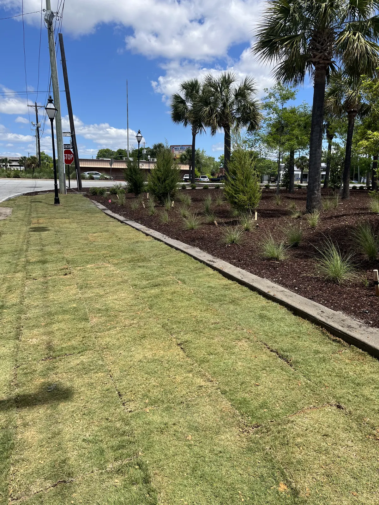

Sod Installation in Charleston, SC

A New Lawn Is Only as Good as the Grade Underneath It
Sod is the fastest thing we do. A yard that has been thin, patchy or taken over by weeds for years is green again in a day. Everything that decides whether it stays green, though, happens before the first piece goes down.
Doug and Zach Cramer walk the yard and measure it themselves, and the same crew that grades the ground lays the sod. There is no handoff between two companies where the grading gets blamed for the lawn and the lawn gets blamed for the grading.
We install sod on homes and commercial properties across Charleston, Mount Pleasant, West Ashley, James Island and Summerville.
What Sod Actually Costs
We quote sod by the pallet, not by guesswork. $750 a pallet, installed. That moves up or down with the size of the job — a full yard prices better per pallet than a small patch in the corner.
What that number does not cover is the work that comes before the sod: spraying off the old grass, digging it out and regrading the yard. That is quoted separately, because a flat lawn that just needs a refresh and a yard that needs reshaping are two different jobs.
| A pallet of sod, installed | $750 |
|---|---|
| Larger yards | price per pallet comes down |
| Small patches and repairs | price per pallet goes up |
| Dig-out, grading and prep | quoted separately |
Pallet coverage varies from farm to farm, so we confirm how many pallets your yard takes when we measure it. We keep the grading as its own line rather than folding it into a square-foot price, so you can see what each part of the job costs.

What Happens Before the Sod Goes Down
- Spray and kill the existing grass and the weeds. The weeds are the point — nobody wants them coming back up through a brand new lawn.
- Dig the old grass out.
- Regrade the yard as necessary.
- Lay the new sod.
- Roll it.
Rolling is the step most people have never heard of. It presses the sod into the soil, pushes the air pockets out and levels the surface — the difference between a lawn you can mow evenly and one that scalps on every high spot.
If your yard holds water or sits unevenly, that is a grading problem rather than a grass problem, and it gets fixed first. See landscape grading.
Zoysia and St. Augustine: What Goes Where
Zoysia and St. Augustine are the two varieties we install most often around Charleston.
- Zoysia is fine-bladed and dense. It takes full sun and stands up to being walked on. Like every warm-season grass here it browns off over winter and comes back in spring.
- St. Augustine has a wider blade and the better shade tolerance of the two, which is why it ends up under live oaks and along the shaded side of a house so often.
We install other varieties where the site calls for them. The choice almost always comes down to how much sun an area actually gets, which is rarely how much sun people think it gets. That is one of the things we check on the walkthrough.
How Often to Water New Sod in Charleston
Every day for the first two weeks. Thirty minutes is enough, a little more when the heat is serious.
Do not water late in the day or at night. This is the one people get wrong, and it is the one that kills lawns. Sod that sits wet overnight can rot or pick up a fungus, and in a Lowcountry summer it will not dry out on its own. Water in the morning and let the day do the rest.
After the first two weeks the roots have started to take hold and you can ease off. We go through watering, traffic and mowing with you when we hand the lawn over, because the first month decides how the lawn looks for the next ten years.
When You Can Mow It
Usually around the two-week mark — but honestly, the date matters less than the lawn. It needs to be rooted in and actually growing before you cut it, and the season changes how long that takes. Check instead of counting: lift a corner of a piece, and if it resists and feels anchored, it has rooted. Until then, keep the mower and the foot traffic off it.
If you have irrigation, we can set the initial schedule for you as part of irrigation system installation.

The Best Time of Year to Lay Sod in Charleston
Best: mid-summer through early fall. The ground is warm, the grass is actively growing, and it roots quickly.
Trickiest: February and March. Not a write-off, but the month we’d steer you away from if the timing is flexible. As sod comes out of dormancy it starts putting on new growth, and that new growth is fragile when the sod is harvested and laid. It can come through it fine. It just has less margin than sod cut in July does.
Two other things about that window:
- Different varieties come out of dormancy at different rates, so what is fine for one grass is early for another.
- Heavy rain can delay the whole job. If the farm’s ground is too wet they can’t get equipment on it to harvest, and no amount of scheduling on our end moves that. Spring is when that happens most.
That cuts against the instinct to do the yard in early spring, but it is what we see year after year. Sod can go down outside the ideal window — it just wants more attention while it establishes, and a bit more flexibility on the date.
Simple sod jobs we try to fit in within a few weeks at most, so timing it well is usually possible.

Why New Sod Fails
- Poor grading. You get a lumpy yard, and once the sod is down the only way to level it is to lift it again. This is why the prep matters more than the grass.
- Improper watering. Too little, or at the wrong time of day.
- Dogs and heavy traffic in the first couple of weeks. The roots have not anchored yet. Stay off it.
- Not enough sun. Sod laid where grass was never going to grow.
The last one is the one nobody wants to hear. If an area is too shaded, new sod will not change that — it will just die more slowly than the last lawn did. We will say so before we quote it, and in those spots artificial turf is usually the honest answer.
How We Do Yours
- Free consultation at your home. We measure the areas, look at sun, drainage and what is growing there now, and tell you what it will take. Free anywhere around Charleston, Mount Pleasant and Summerville; farther out, like Bluffton or Kiawah Island, there’s a trip charge.
- Quote. Sod by the pallet, with any dig-out and grading priced separately so you can see both numbers.
- Prep. Spray off and kill the old grass and weeds, dig them out, then regrade where the yard needs it.
- Install and roll. Sod laid, then rolled in to push out the air pockets and level the surface.
- Handover. We walk you through watering, traffic and mowing before we leave.
Sod works alongside irrigation, drainage, grading, mulch and beds and plants and trees. Everything is backed by our 1-year workmanship and plant warranty.
Areas We Serve
Cramers Landscaping provides its services throughout:
We handle sod installation in Charleston, SC throughout Charleston County, including Charleston, Mount Pleasant, West Ashley, Summerville, Folly Beach, and Sullivan’s Island.
- Charleston, SC
- Mount Pleasant, SC
- Isle of Palms, SC
- North Charleston, SC
- James Island, SC
- West Ashley, SC
- Kiawah Island, SC
- Summerville, SC
- Daniel Island, SC
- Johns Island, SC
Frequently Asked Questions
How much does sod installation cost in Charleston?
We quote sod by the pallet: $750 a pallet, installed. That moves up or down with the size of the job, because a large yard prices better per pallet than a small patch. It does not include killing and digging out the old grass or regrading the yard, which we quote separately on your property.
How often should you water new sod?
Every day for the first two weeks. Thirty minutes is enough, a little more in serious heat. After the first two weeks the roots have started to take hold and you can ease off.
Can you overwater new sod?
Yes, and the bigger mistake is watering at the wrong time. Avoid watering late in the day or at night. Sod that sits wet overnight can rot or pick up a fungus, and in a Lowcountry summer it will not dry out on its own. Water in the morning.
What is the best time of year to lay sod in Charleston?
Mid-summer through early fall is the best window, because the ground is warm and the grass is actively growing. February and March is the trickiest. It is not a write-off, but as the sod comes out of dormancy it starts putting on new growth, and that growth is fragile when the sod is harvested and laid. Different varieties come out of dormancy at different rates too. And heavy spring rain can hold the whole job up, because if the farm's ground is too wet they cannot get on it to harvest.
Can rain delay a sod installation?
Yes, and not for the reason people expect. The hold-up is usually at the farm rather than at your house: if their ground is too wet they cannot get equipment on it to cut the sod, so there is nothing to deliver. Sod is a perishable product and it is cut to order, so when that happens the date moves. It is most common in spring.
What kind of sod grows best in Charleston?
Zoysia and St. Augustine are the two we install most often here. Zoysia is fine-bladed and dense and handles full sun and foot traffic. St. Augustine has the better shade tolerance of the two, which makes it the usual pick under live oaks and on the shaded side of a house. We install other varieties where the site calls for it.
When can you mow new sod?
Usually around the two-week mark, but the date matters less than the lawn. It needs to be rooted in and actually growing before you cut it, and the season changes how long that takes. Check rather than count: lift a corner of a piece, and if it resists and feels anchored it has rooted. Until then keep the mower and the foot traffic off it.
Why did my new sod die?
Four things account for nearly all of it: poor grading, improper watering, dogs or heavy traffic in the first couple of weeks, and sod laid somewhere there was never enough sun for grass to grow.
Does the yard need grading before sod?
Often, yes. Poor grading is the number one reason a new lawn comes out lumpy, and it cannot be fixed after the sod is down without lifting it again. We roll the sod after install to level it and press the roots into the soil, but rolling does not fix a bad grade.
How long before you can start a sod job?
It depends on how busy we are, but simple sod jobs we try to fit in within a few weeks at most.
Request a Free Sod Installation Consultation
If your lawn needs a fresh start, Cramers Landscaping is here to help. We provide:
- Full sod installation
- Partial sod repairs
- Soil and grading improvements
- Irrigation adjustments
- Ongoing landscape maintenance
Call (843) 614-9773 or request a consultation online to schedule your onsite evaluation. Let Cramers Landscaping create a healthy, beautiful lawn built to thrive in Charleston's coastal climate.